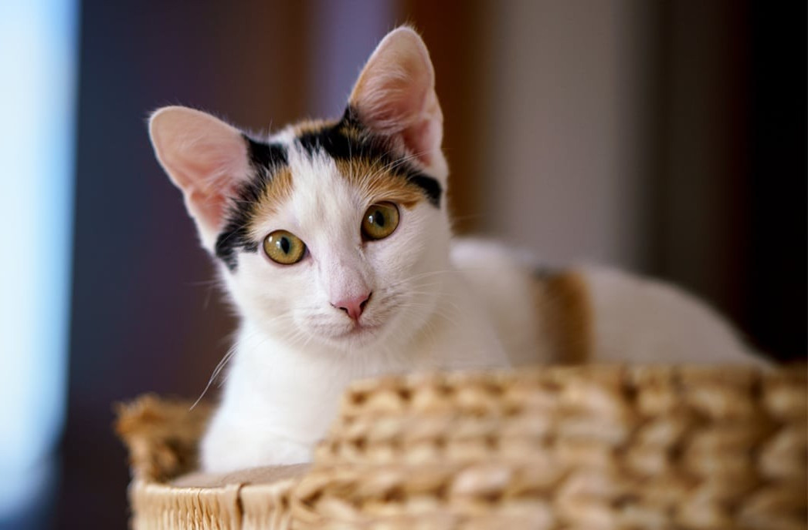
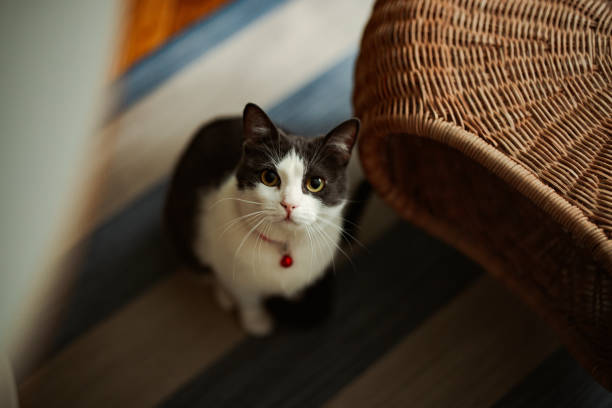
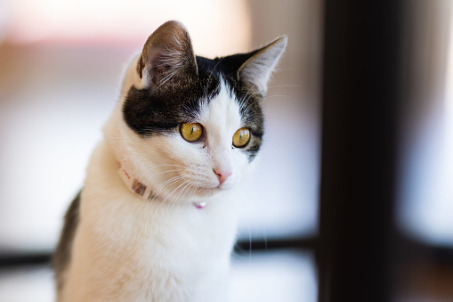
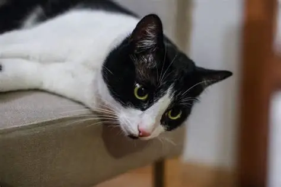
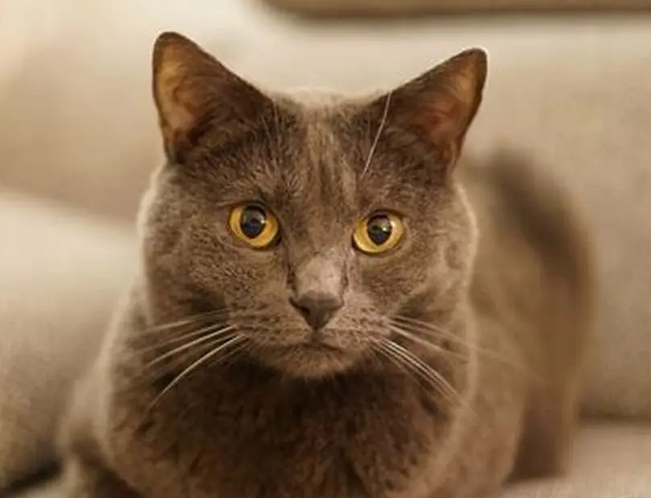
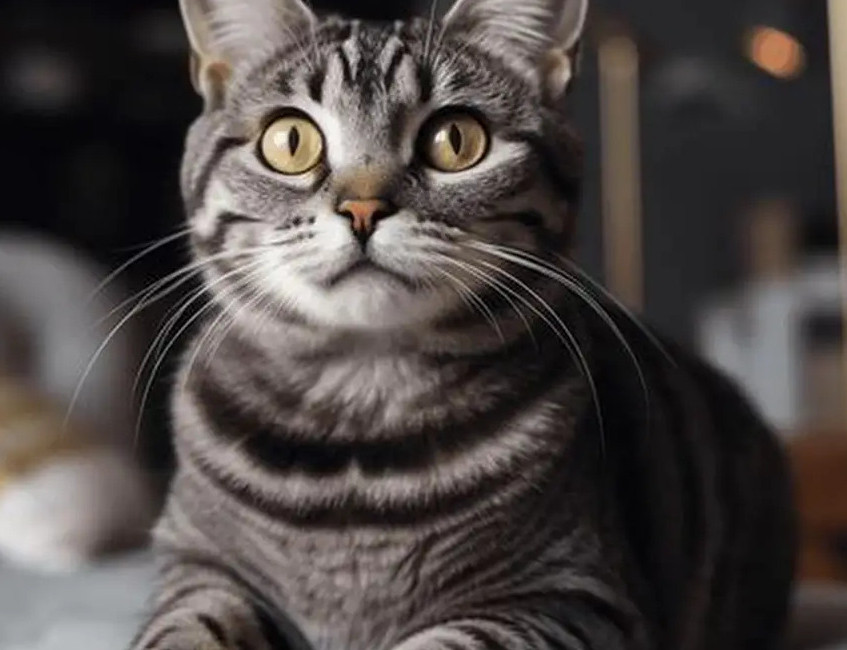
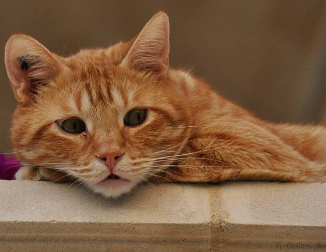
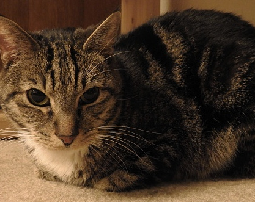

Adopcja Kotów
Adopcja kotów w kawiarni to połączenie relaksu z poznawaniem zwierzaków,
które szukają domu. Wchodzisz, zamawiasz coś do picia i możesz spędzić czas
z kotami w naturalnym, swobodnym otoczeniu. Obserwujesz ich zachowanie,
bawisz się z nimi,a jeśli któryś szczególnie przypadnie ci do serca, zgłaszasz
chęć adopcji. Potem odbywa się krótka rozmowa z opiekunem i formalności.
To przyjemny, bezstresowy sposób na poznanie przyszłego pupila.
Koty do adopcji

Ala
2 lata

Lusia
1 rok

Musia
1,3 roku

Nana
1 rok

Kot
3 lata

Bob
5 lat

Rubi
3 lata

Luna
2 lata
Aby zaodoptować kotkę prosimy o
kontakt telefoniczny lub podejście do kawiarni